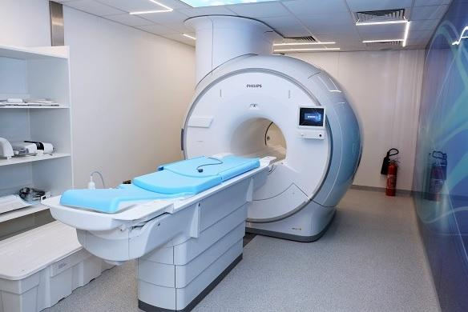

Consultations générales et spécialisées assurées par nos médecins pour le suivi de votre santé.
Diagnostic et suivi des maladies cardiovasculaires avec un accompagnement personnalisé.
Réalisation des analyses médicales avec des équipements modernes.

Examens d'imagerie médicale pour faciliter le diagnostic des patients.
Suivi médical des nourrissons, des enfants et des adolescents, avec des consultations et des soins adaptés à chaque âge.
Interventions chirurgicales réalisées par une équipe de chirurgiens expérimentés dans un environnement sécurisé.
Imagerie par Résonance Magnétique (IRM) permettant un diagnostic précis grâce à des équipements de dernière génération.
Consultations, suivi de grossesse, dépistage et prise en charge de la santé de la femme.
Prise en charge rapide des situations urgentes 24h/24